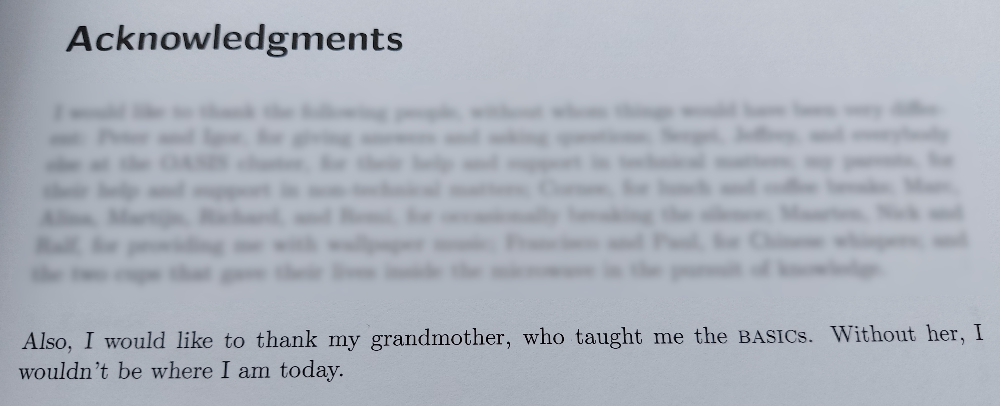

10 FOR I = 1 to 100
20 LET S$ = ""
30 IF I % 3 = 0 THEN LET S$ = S$ + "FIZZ"
40 IF I % 5 = 0 THEN LET S$ = S$ + "BUZZ"
50 IF S$ = "" THEN LET S$ = I
60 PRINT S$
70 NEXT I
- BASIC - 🤔
- BASIC - 💡

from my master’s thesis
- PHP - 💻
<?php
for ($i = 1; $i <= 100; $i++)
{
if (!($i % 15))
echo "FizzBuzz\n";
else if (!($i % 3))
echo "Fizz\n";
else if (!($i % 5))
echo "Buzz\n";
else
echo "$i\n";
}
?>
- PHP - 🤔
- PHP - 💡
- Elm - 💻
import Html exposing (text)
import List exposing (map)
main =
List.range 1 100 |> map getWordForNum |> String.join " "
getWordForNum num =
if modBy num 15 == 0 then
"FizzBuzz"
else if modBy num 3 == 0 then
"Fizz"
else if modBy num 5 == 0 then
"Buzz"
else
String.fromInt num
- Elm - 🤔
I got to the end of the line without seeing the closing double quote:
6| helloworld = "Hello world
^
Strings look like "this" with double quotes on each end. Is the closing double
quote missing in your code?
Note: For a string that spans multiple lines, you can use the multi-line string
syntax like this:
"""
# Multi-line Strings
- start with triple double quotes
- write whatever you want
- no need to escape newlines or double quotes
- end with triple double quotes
"""
- Elm - 💡
- Lisp - 💻
(define (fizzbuzz x y)
(println
(cond ((= (modulo x 15) 0) "FizzBuzz")
((= (modulo x 3) 0) "Fizz")
((= (modulo x 5) 0) "Buzz")
(else x)))
(if (< x y) (fizzbuzz (+ x 1) y)))
(fizzbuzz 1 100)
program FizzBuzz;
var
i: Integer;
begin
for i := 0 to 100 do
begin
if i mod 15 = 0 then
WriteLn('FizzBuzz');
else if i mod 3 = 0 then
WriteLn('Fizz');
else if i mod 5 = 0 then
WriteLn('Buzz');
else
WriteLn(IntToStr(i));
end;
end.
 - PHP - 💻
- PHP - 💻 - Elm - 💻
- Elm - 💻